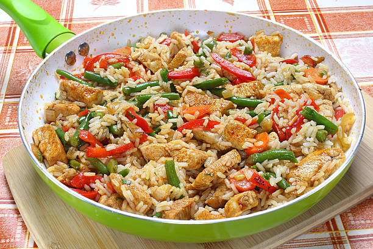

Chicken and Rice

Description
Chicken and rice is quick and easy dish to make for the family in about 30 minutes on a busy weekday that the family will love.
Ingredients
- 1 pound of boneless and skinless chicken thighs or breasts
- 1 bag of mixed vegtables corn, green pepper, onion and carrot
- 2 cups of your favorite white or brown rice I would recommend basmati
- 1 half stick of butter
- 1 cup of chicken stock
- 1 teaspoon of sage and another of thyme
- 1 teaspoon of salt and freshly ground pepper
- 1 teaspoon of red cayenne pepper and another of red pepper flakes optional adds spiciness
- 1 avacado ripe
Steps
- cube chicken breast or thighs with knife or kitchen shears
- heat a dutch oven or sauce pan to medium heat
- start cooking the 2 cups of rice of choice
- add cubed chicken and let brown
- add 1 cup of chicken stock once chicken is brown
- add mixed veggies and bring to light boil
- add seasonings
- cover once up to a boil and reduce heat to simmer
- be sure to stir often and not to over cook veggies
- slice avacado
- serve chicken and veggies over rice and top with sliced avacado
- Enjoy!